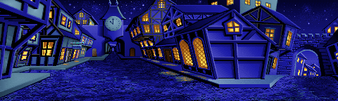
Whenever Guybrush exits Low Street towards the Docks, there's a small chance that the Citizen of Mêlée's parrot will squawk right before the scene changes. The odds of it happening are low enough that you could easily finish the game without ever seeing it happen, and when it does happen it can be startling because of how unexpected it is. There's no obvious pattern or trigger, other than the fact that it only ever seems to happen right before the screen transition to the Docks.
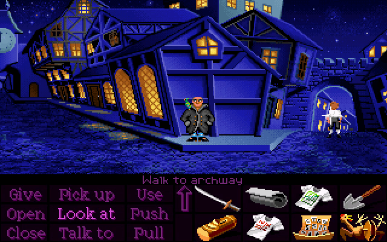
It turns out, the parrot is actually broken! It's supposed to randomly squawk every so often whenever Guybrush is near it, but a programming oversight causes it to never happen except under very specific circumstances.
Here's how the parrots script works:
Roughly every 13.33 to 16.67 seconds, the parrot makes a "squawk attempt". When a squawk attempt happens, the parrot checks three different conditions:
Guybrush is not currently talking to the Citizen of Mêlée.
The camera is scrolled far enough to the right.
The camera is not currently scrolling.
If all three conditions are true, the attempt succeeds and the parrot squawks! Otherwise, nothing happens and the parrot waits another 13.33 to 16.67 seconds before making another attempt.
Condition #3 is where things break, however. The game tries to check that the camera isn't moving, but the way it does this is by saving the camera's position to a variable, waiting a frame, and then comparing the camera's new position to the value from before. If both numbers are the same, then the check succeeds. The problem is that instead of creating a dedicated local variable for the camera position, it just puts it into some kind of global "temp" variable, which is used all over the place for things like holding the result of maths operations - in other words, it uses a variable that cannot safely be used for anything that needs to persist across multiple frames, because other things might need to use it in the meantime.
While all of this is happening, there's another script running in the background which also uses that same variable every frame for something completely unrelated. This means that when the parrot checks the variable expecting to find the camera position from the previous frame, it instead gets a garbage number from the interfering script, and so the squawk attempt fails every time (unless the garbage number happens to be the same as the camera position, which is incredibly unlikely but technically possible).
I went digging to figure out exactly which script is interfering, expecting it to be something in the same room like the rat or the wandering pirates, but nope! The actual answer is a little weirder. Throughout the entire game, there's a tiny script constantly running in the background which does nothing but generate a random number every frame, and it saves that number into the same "temp" variable that the parrot uses. I have absolutely no idea what the purpose of this script could be. It's stored in the "copycrap" room, which is the Dial-A-Pirate copy protection screen at the beginning, but disabling it has no effect as far as I can tell.
Anyway, we're now left with one more question - why does the parrot sometimes squawk right before Guybrush leaves the room? The reason has to do with the fact that every time SCUMM starts running a script, it can say whether or not that script should be paused during a cutscene (which means any time control is taken away from the player, such as while Guybrush is walking through the archway to the Docks). The parrot script doesn't pause during cutscenes, but the interfering script does, which means if a squawk attempt happens during the brief window when Guybrush is walking through the archway, it squawks!
This isn't actually the only way to make it squawk, through. All you have to do is put the game into a state that it considers a cutscene, which can be done in several ways. If you read LeChuck's note while standing near the parrot, for example, it will usually trigger while Guybrush is reading it, although the text itself gets delayed until he's done.
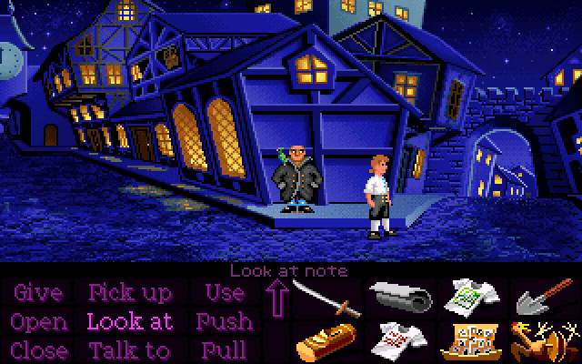
Also, in the demo versions of Secret of Monkey Island (both the Passport to Adventure demo and the standalone demo), the parrot actually works as intended, though the text saying "Braaaak!" hadn't been added yet. This makes sense, since the demos don't include the copy protection screen, which is where the interfering script is located.
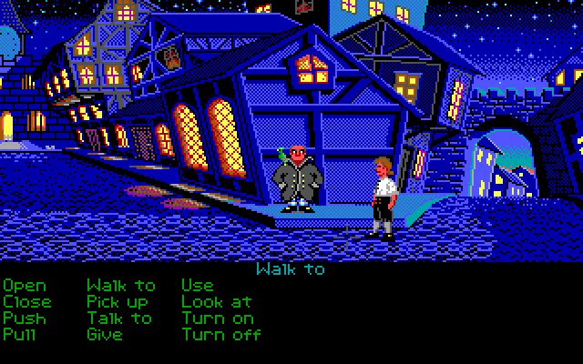
Here's what the animation frames of Fin's head look like. See if you can spot the problem:
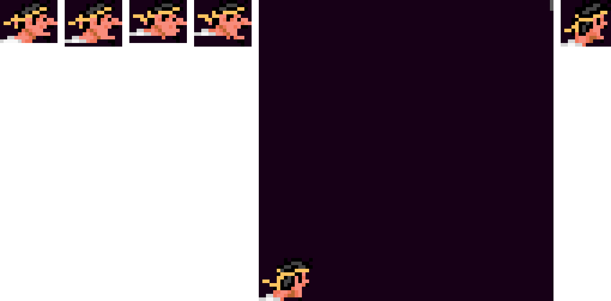
For whatever reason, when Fin turns his head to point at Fred, one of his frames has three stray pixels floating out in the middle of nowhere. It seems like SCUMM costumes were automatically cropped as small as possible, but in this case, the stray pixels meant this frame ended up much bigger than the others.
This can be seen in game when Fin says "More intelligent than HIM." The flickering pixels are on the top-right corner of the nearer of the two upstairs windows, directly above the word "intelligent".
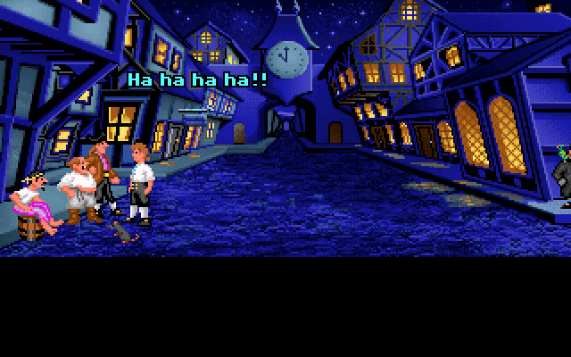
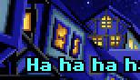
Whenever Frank hits Fred on the head, the game displays a three-letter onomatopoeia representing the sound - something like "-- pfk --". It turns out the onomatopoeia is generated randomly every time! The third letter will always be K, but the first two letters get chosen randomly.
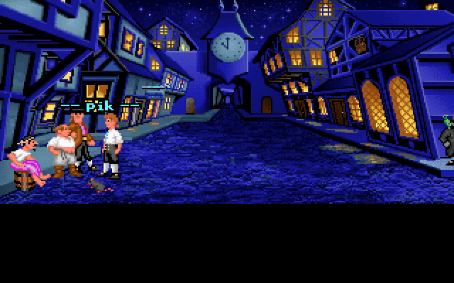
And yes, this means several potentially-rude letter combinations are indeed possible.
An easy-to-miss detail is that both the wandering pirates and the lights in the windows turning on and off are actually dependent on whether or not Elaine's been kidnapped! After the kidnapping, the streets are devoid of wandering pirates, and all lights that were already on remain on, as if to suggest everyone's hiding indoors.
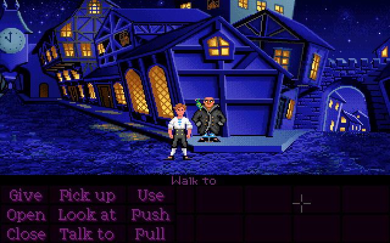
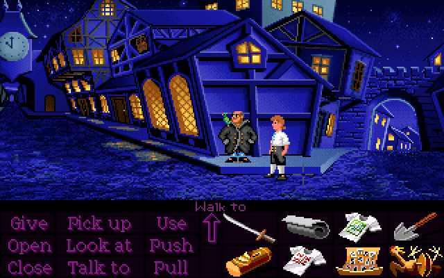
The Grim Spectre in Part 4 has a full suite of directional walking animations, despite the fact that he never actually moves from his spot.

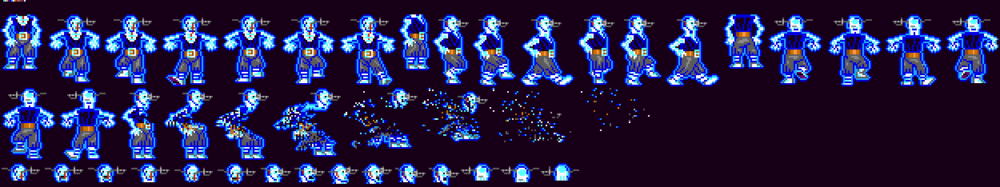